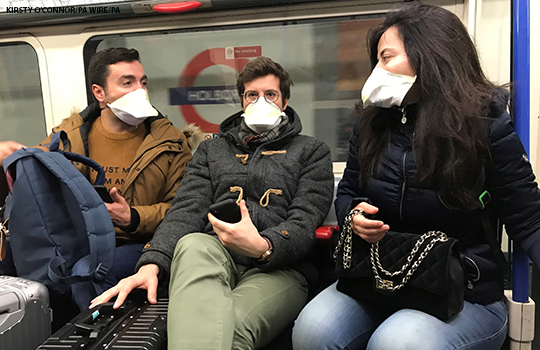

To wear or not to wear: WHO’s confusing guidance on masks in the covid-19 pandemic
'Other equally relevant measures' does not 'suggest that wearing a mask works equally well as other measures', it suggests taking other measures that are relevant to the situation - relevancy and effectiveness are clearly different things.
The guidance clearly states that masks can help to limit the spread of certain respiratory diseases.But then goes on to state that you shouldn't ONLY wear a mask.That's not hard to understand is it?
So the statement in the article, 'Not having established at this point whether wearing a mask is indicated or not' is clearly incorrect.
In terms of cost, might it not be suggesting that cost can be an issue if a government were to try and supply it's entire population with masks?Or that in developing countries people might not be able to afford them?
The guidance first placed emphasis on the effectiveness of masks - 'Wearing a medical mask is one of the prevention measures to limit spread of certain respiratory diseases' - so the article is wrong here too - it doesn't first place emphasis on cost.
The WHO talk about procurement problems because they're talking internationally.A government would not be able to take responsibility for procuring masks if all governments around the world were panic buying them all would they?
The author's point on whether a mask engenders a false sense of security is pure speculation so worthless.
The WHO's guidance, 'using a mask incorrectly may hamper its effectiveness to reduce the risk of transmission.'does not suggest that using one correctly makes a mask completely effective.It only suggests using one incorrectly may hamper its effectiveness - exactly what it says.It is more effective when used correctly would be the correct assumption.
The WHO would agree with you on using education to ensure using masks correctly - what's your point here?
The rest of the article makes more sense.
If we're going to criticise the WHO, at least do it coherently.
Posted On: 2020-04-04T10:11:00
Posted By: Tom S
Thanks for a well argued article.
Posted On: 2020-04-01T04:06:00
Posted By: Ramesh Ramloll
There is no doubt confusion exists.It does not make sense when they say masks are not needed, and then go on to say that carers of patients should wear masks.What if an individual is standing next to an affected person on the subway?What about an office colleague who sits in the next carousel who is coughing and sputtering?If the mask can protect carers of patients, stands to reason it would protect the public.This article rightly highlights that there must be some clarity.Dr Vivek
Posted On: 2020-03-16T01:43:00
Posted By: V Baliga
Precaution is always better especially COVID 19 when our lives are at risk.Using hand sanitizers, ppe, gloves, masks are working as a barrier between us and the infectious disease.Thanks for posting an informative piece!!
Posted On: 2020-07-20T00:00:00
Posted By: Blue Flame Medical
I agree with the author of this article.If they're recommending that I wear a mask when caring for sick relative, they are implying that the mask really does have protective ability.As a matter of fact, I saw an interview with a Chinese doctor in Wuhan; he said that everyone should wear a mask.He believes that the mask is a good protective measure.So, I think it's mean deceptive to instruct us not to buy respirators.
Posted On: 2020-03-27T17:39:00
Posted By: Barrett
Respirators are things that breathe for you.They pump air/oxygen into your lungs.They're recommending using personal protection equipment (or PPE), such as masks and gloves when dealing directly with someone infected as, yes, they do provide
some protection.But to say that
everyone should be wearing masks in
all situations will only lead to mass shortages where they are truly needed, and lots of misuse of these masks, essentially wasting them
Posted On: 2020-04-15T23:38:00
Posted By: Timothy Peter Robb
Nope.That's wrong.@Barrett is correct.You're thinking of a
ventilator .According to NIOSH (and the usage that I have always heard), 'a respirator is a personal protective device that is worn on the face, covers at least the nose and mouth, and is used to reduce the wearer’s risk of inhaling hazardous airborne particles (including dust particles and infectious agents), gases, or vapors.'And your point about wasting masks is
not supported by empirical research.
Posted On: 2020-05-15T09:42:00
Posted By: Martin Videra
Thank you for your comment, Martin.You are quite correct on both points, while I have heard the term 'respirator' commonly used for what is actually a
ventilator in my community a fair bit, I imagine this is likely a confusion of the term.And my ignorance on mask usage has definitely evidently been shown over the past few months.However, it is important to note that they're utter ineffective if they're used improperly, and
then are definitely a waste and a hazard (as they believe they have some measure of protection) to their communities.I wholeheartedly agree that we should be focusing on proper training on how to accurately protect yourself as much as possible without putting a strain on your local community's capabilities by respecting what you're able to obtain
Posted On: 2020-05-22T13:06:00
Posted By: Timothy Peter Robb
The doctor in China was speaking from the perspective of almost 1.4 billion people a significant dense per square kilometer population
Posted On: 2020-04-15T05:37:00
Posted By: steelheader
Ambiguity.Ambivalence are terms in English language. .Say something and contradict it with a following statement.I have seen several so called or self styled experts with this disease..I believe any protection is better than no protection.In unavoidable situations individuals may have to make masks of any available material and use them..Even if it be cloth or tissue paper and could be forced to disinfect and reuse those not visibly contaminated.Wonder what the poor and poor communities will be forced to do.
Posted On: 2020-03-22T09:52:00
Posted By: Neil Rangel

Content Date: 2020-04-04
Download Date: 2021-04-21
Document ID: L0C04ASQJ